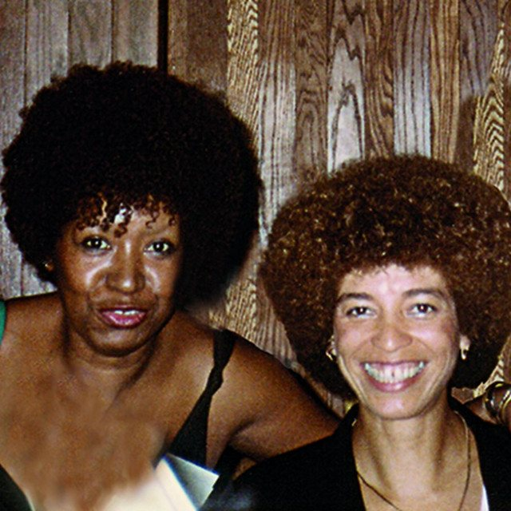

The Eclectic Polymath Podcast · Archive
#120 Lélia Gonzalez and Angela Davis: Black Feminism Across the Americas

About this episode
Black feminism in the Americas didn’t develop from one country, one movement, or one political tradition.
This episode brings Lélia Gonzalez and Angela Davis into conversation as two major thinkers shaped by different racial orders, political systems, and national histories. It traces Gonzalez’s work in Brazil around racial democracy, amefricanidade, Black women’s political thought, and the Movimento Negro Unificado alongside Davis’s formation through segregated Birmingham, Marxism, Black liberation, incarceration, and prison abolition.
We get into where their ideas overlap, where they differ, and why Black feminist thought makes more sense when viewed across the hemisphere rather than through the United States alone. This is a story about race, gender, class, state violence, culture, and the different languages Black women developed to describe liberation across the Americas.
Key points
- Black feminism in the Americas didn’t develop from one country, one movement, or one political tradition.
- This episode brings Lélia Gonzalez and Angela Davis into conversation as two major thinkers shaped by different racial orders, political systems, and national histories.
- It traces Gonzalez’s work in Brazil around racial democracy, amefricanidade, Black women’s political thought, and the Movimento Negro Unificado alongside Davis’s formation through segregated Birmingham, Marxism, Black liberation, incarceration, and prison abolition.
- We get into where their ideas overlap, where they differ, and why Black feminist thought makes more sense when viewed across the hemisphere rather than through the United States alone.
- This is a story about race, gender, class, state violence, culture, and the different languages Black women developed to describe liberation across the Americas.
More like this
 #221 The Homestead: Who Got Set Up, Who Got StrippedOctober 18, 20261:14:22
#221 The Homestead: Who Got Set Up, Who Got StrippedOctober 18, 20261:14:22 #219 The Grove & The Americana: Fake Towns, Real EmpireOctober 17, 202649:36
#219 The Grove & The Americana: Fake Towns, Real EmpireOctober 17, 202649:36 #190 Church Hierarchy: From Apostles and Bishops to Pastors and PopesOctober 5, 20261:04:30
#190 Church Hierarchy: From Apostles and Bishops to Pastors and PopesOctober 5, 20261:04:30 #189 DC's Identity Crisis: How the Original Superhero Empire Lost Hollywood to MarvelOctober 4, 202648:08
#189 DC's Identity Crisis: How the Original Superhero Empire Lost Hollywood to MarvelOctober 4, 202648:08